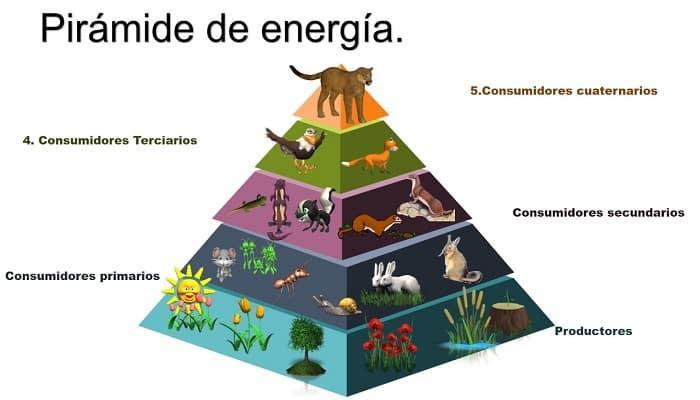

La energía fluye a través de los ecosistemas, mientras que los nutrientes se reciclan mediante los ciclos biogeoquímicos. Comprender estos procesos es fundamental para entender cómo funciona la vida en nuestro planeta.
¿Qué es el flujo de energía?
El flujo de energía es el proceso mediante el cual la energía entra a los ecosistemas, se transfiere entre los organismos y finalmente se disipa como calor. A diferencia de la materia, la energía no se recicla; siempre debe ingresar nueva energía al sistema.
El Sol como fuente principal de energía
La transferencia de energía solar a química transforma la radiación luminosa en energía potencial almacenada en enlaces químicos, principalmente mediante la fotosíntesis. El Sol es la fuente primaria de energía para la fotosíntesis, actuando como el motor que permite a las plantas convertir dióxido de carbono y agua en glucosa y oxígeno.
Niveles tróficos
Productores
Organismos autótrofos que producen su propio alimento mediante la fotosíntesis. Son la base del ecosistema.
Consumidores Primarios (Herbívoros)
Se alimentan directamente de los productores. Obtienen la energía almacenada de las plantas.
Consumidores Secundarios (Carnívoros)
Se alimentan de consumidores primarios. Reciben menos energía que los niveles inferiores.
Consumidores Terciarios (Depredadores Topes)
Están en los niveles más altos de la cadena alimentaria. Son menos numerosos.
Pirámide de Energía

La pirámide de energía representa la cantidad de energía disponible en cada nivel trófico. Solo aproximadamente el 10% de la energía es aprovechada por el siguiente nivel. El resto se pierde principalmente en forma de calor durante los procesos metabólicos.
Ciclos Biogeoquímicos
Son procesos naturales que reciclan elementos químicos esenciales (como carbono, nitrógeno, oxígeno, fósforo, azufre y agua) entre los seres vivos y el ambiente abiótico.
Ciclos Gaseosos
Los nutrientes circulan rápidamente entre la atmósfera y los seres vivos. Ejemplos: carbono, nitrógeno, oxígeno y agua.
Ciclos Sedimentarios
Los nutrientes se reciclan más lentamente y se encuentran principalmente en la corteza terrestre. Ejemplos: fósforo y azufre.
Importancia de los Flujos Biogeoquímicos
Aseguran la disponibilidad de nutrientes necesarios para la vida, regulan el clima y mantienen el equilibrio en la biosfera.